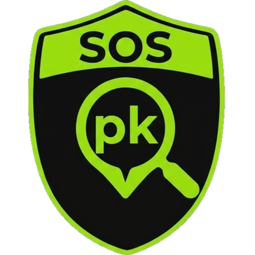

Cámaras, avisos e incendios funcionan en tus provincias descargadas y necesitan cobertura. Los sectores se crean en Configuración. SOSpk solo facilita el buscador y el enlace; los datos son de quien los publica.
Avisos vigentes de AEMET (vía Meteoalarm) en tus provincias con paquete. Son responsabilidad de quien los publica; SOSpk solo te facilita el enlace.
SOSpk localiza puntos kilométricos de las carreteras de España y te lleva hasta ellos. Escribe la carretera y el km, o toca el mapa, y te damos las coordenadas, el PK más cercano, el enlace a Google Maps, copiar las coordenadas y el enlace para WhatsApp.
Coordenadas: también puedes escribir unas coordenadas, o pegar un enlace de Google Maps, Apple Maps o WhatsApp, en la misma casilla de la carretera. Formatos de coordenadas:
• Decimales: 40.635833, -3.168639
• Con letras: 40.635833 N, 3.168639 W (vale O por oeste)
• Grados, minutos y segundos: 40°38'09.0"N 3°10'07.1"W
• Grados y minutos decimales: 40°38.150'N 3°10.118'W
Vale la coma o el punto decimal.
Consejo: pulsa cualquier punto del mapa para ver sus coordenadas, el PK más cercano e ir hasta allí; mantenlo pulsado para ver los PK cercanos y guardarlo como favorito. En el buscador puedes escribir una carretera o, con PRO, un municipio, un pueblo o un paraje.
Sin anuncios y sin cobertura. Pensada para quienes trabajan en carretera: bomberos, sanitarios, policías, emergencias, protección civil y asistencia en carretera, o cualquiera que necesite compartir su ubicación exacta.
La versión Básica incluye: buscador de puntos kilométricos, mapa, tu ubicación con coordenadas y el PK más cercano, mapas sin conexión con detalle medio (app Android), 5 favoritos, 5 colores y 5 iconos.
La versión PRO añade: municipios, pueblos y parajes en el buscador, cámaras de tráfico, balizas V16 y accidentes, cortes y obras en directo, hidrantes y puntos de agua, avisos meteorológicos, incendios activos, sectores con perímetro y área, mapas sin conexión con detalle alto (app Android), hasta 50 favoritos con enlace e imagen, y más colores e iconos.
¿Qué es SOSpk PRO? Una suscripción para los profesionales de la carretera, que no se pueden permitir una demora. Al descargar una provincia incluye sus municipios, parajes, cámaras de tráfico (con enlace a la web oficial), balizas V16 y tráfico en directo, puntos de agua para emergencias, avisos meteorológicos vigentes y focos de incendio de hoy. 1,99 € al mes o 10,99 € al año, con 10 días de prueba gratis; se cobra por Google Play y se cancela cuando quieras. Cámaras, balizas, tráfico, avisos e incendios necesitan cobertura; el buscador de PK sigue funcionando sin ella.
Instálala en tu iPhone o iPad: toca el botón Compartir (el cuadrado con la flecha hacia arriba) y elige «Añadir a pantalla de inicio». Se abrirá a pantalla completa, como una app, y el móvil no borrará sus datos si pasas semanas sin usarla.
Marca las provincias que quieras usar. Se guardan en el dispositivo y funcionan sin cobertura. Con PRO, cada provincia incluye sus municipios, pueblos, parajes, cámaras, avisos e incendios.
Dibuja un sector punto a punto sobre el mapa: si lo cierras obtienes su perímetro y su área; si no, es una ruta con su longitud. Ponle nombre y color. Se guardan solo en este dispositivo.
De lejos se ven el primer y el último PK de cada carretera en tus provincias y algunos km de autovías y nacionales; al acercar aparecen más, con el nombre de la carretera.
Mapas sin conexión: mapas © IGN (CNIG). Para uso personal dentro de la app.

Datos: hitos kilométricos oficiales del Instituto Geográfico Nacional (IGR Redes de Transporte, CC BY 4.0), puntos kilométricos de CartoCiudad (IGN · SCNE, CC BY 4.0 scne.es) y trazado de © colaboradores de OpenStreetMap (ODbL) y nombres de lugares del Nomenclátor Geográfico Básico de España (IGN, CC BY 4.0). Mapas: IGN / PNOA. Las posiciones entre hitos (≈) son una estimación.
Cámaras, balizas V16 e incidencias: DGT, vía el Punto de Acceso Nacional del Ministerio de Transportes (Powered by MITRAMS); puntos de agua: © colaboradores de OpenStreetMap (ODbL); focos de calor: NASA FIRMS (VIIRS y MODIS); viento: Open-Meteo.com (CC BY 4.0); Servei Català de Trànsit; Gobierno Vasco (CC BY 4.0); ayuntamientos de Madrid, Valencia y Málaga (CC BY 4.0); Vitoria-Gasteiz. Avisos: AEMET, vía Meteoalarm (CC BY 4.0). Incendios: EFFIS, Copernicus EMS.
Descargo de responsabilidad: SOSpk solo te facilita el buscador y el enlace. Los puntos kilométricos, las imágenes de las cámaras, los datos y los avisos son responsabilidad del IGN, la DGT, AEMET, EFFIS o la entidad que los publica, y pueden tener errores o retrasos. Las imágenes, el mantenimiento y los fallos o interrupciones de las cámaras no son responsabilidad de SOSpk, que solo enlaza a la web de quien las publica. SOSpk no es un servicio oficial, no sustituye a la señalización ni a los servicios de emergencias y no llama a emergencias.
Aviso: la información es orientativa. Los PK y las posiciones calculadas (≈) pueden contener errores y no sustituyen a la señalización de la carretera ni a la información de los servicios oficiales. No se garantiza su exactitud ni se asume responsabilidad por su uso.